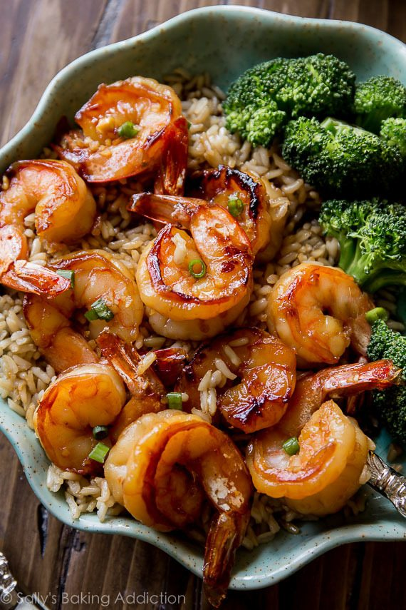

Honey Garlic Shrimp
 garlic shrimp">
Ingredients
Steps
Make your marinade.
Combine marinade and shrimp and marinate for at least 15 minutes or up to 8-12 hours. We usually only marinate it for about 15 minutes and during this time, you could prepare your side dishes such as steamed vegetables and instant brown rice.
Cook shrimp in a little olive oil, then flip and pour in the remaining sauce until cooked through.
Top with green onions and serve